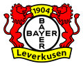

Schick in Tschechien Spieler der Saison und offen für Comeback
Leverkusens Stürmer Patrik Schick ist in Tschechien zum Spieler der Saison 2025/26 gewählt worden. Bei der Preisverleihung in Prag am Montag ließ der 30-Jährige eine Rückkehr in die Nationalmannschaft ausdrücklich offen. Im Juni war er nach dem WM-Aus als Gruppenletzter aus dem Team zurückgetreten.
Der Verband der Sportjournalisten vergab den Goldenen Ball zum zweiten Mal an Schick, nachdem er ihn bereits 2021/22 erhalten hatte. „Das ist eine große Auszeichnung, die ich sehr zu schätzen weiß“, sagte er. In der Bundesliga traf er in der vergangenen Saison 16 Mal. Für Tschechien erzielte er in 56 Länderspielen 26 Tore.
Auf die Frage, ob es beim Abschied bleibe, antwortete Schick zunächst knapp: „Im Moment sehe ich das so.“ Später wurde er konkreter: „Wenn ich gesund bin und das Gefühl habe, dass ich der Nationalmannschaft etwas geben und ihr helfen kann, dann können wir noch einmal darüber sprechen.“
Seinen Rücktritt hatte Schick mit der negativen sportlichen Entwicklung bei Team und Verband sowie dem psychischen Druck begründet. Nach dem Turnier lösten Trainer Miroslav Koubek und der Verband den Vertrag auf, Santi Denia übernahm. Mit ihm und Manager Pavel Nedvěd führte Schick Gespräche. „Die Spielweise sieht deutlich besser aus als früher. Und vor allem ist die Stimmung rund um die Nationalmannschaft anders, viel positiver“, sagte er.
Denia bestätigte den Kontakt: „Wir haben vor einer Woche über seine Situation gesprochen: Die Tür ist offen für ihn.“
Sportlich läuft es für Schick in Leverkusen. Als einziger Bundesliga-Spieler traf er an jedem der ersten vier Spieltage und steht bei fünf Toren und einer Vorlage in sechs Spielen. Trainer Carles Martínez setzt auf ihn wie kein Bayer-Coach zuvor. Dem Vernehmen nach könnte das Comeback in der Nationalmannschaft noch in diesem Jahr folgen.